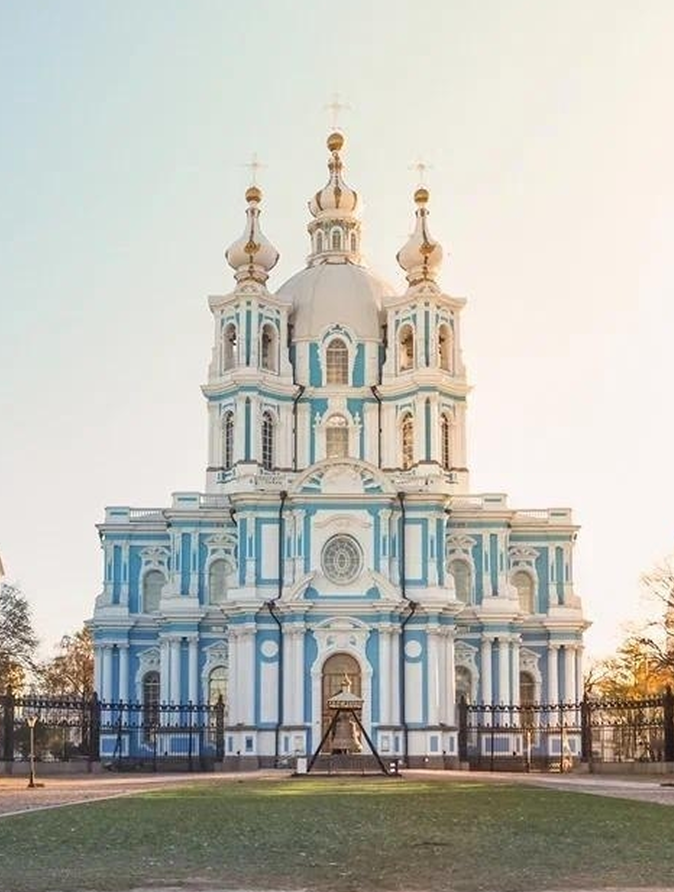

Радость
Елизаветинское барокко
01 // Праздник воды и золота
Большой Петергофский дворец
В Петергофе восторг обретает физическую форму. Большой дворец возвышается над Большим каскадом фонтанов, где вода, золото и зелень парка сливаются в единый ансамбль. Растрелли перестроил скромный дворец Петра I в роскошную резиденцию, достойную императорских приёмов и балов.
Фасад растянулся на 268 метров. Золотые купола домовой церкви, лепнина, скульптура — всё работает на создание образа абсолютного праздника. Это архитектура щедрости, которая не знает границ: чем больше деталей, тем радостнее восприятие.

Большой Петергофский дворец // Франческо Бартоломео Растрелли // 1747-1755 гг.
02 // Вертикаль восторга
Смольный собор
Смольный собор — одна из самых изящных построек Растрелли. Голубые стены, белые колонны, пять позолоченных куполов, устремлённых в небо. В отличие от парадного Зимнего дворца, здесь восторг приобретает вертикальное измерение: это лёгкость, парение, стремление вверх вопреки тяжести камня.
Собор задумывался как центр ансамбля Смольного монастыря, но стал самостоятельной жемчужиной. Его купола видны с разных концов города. Растрелли сумел соединить масштаб с изяществом — здание выглядит монументальным, но при этом не давит, а возносит.

Смольный собор // Франческо Бартоломео Растрелли // 1748-1764 гг.
03 // Архитектура-солнце
Зимний дворец
Зимний дворец Франческо Растрелли — это архитектура, которая не знает меры. Тысячи колонн, лепнина, разорванные фронтоны, обилие золота. В городе, где небо месяцами остаётся серым, Растрелли возвёл здание, способное противостоять этой серости. Восторг здесь становится зрелищем, спектаклем, который разворачивается на главной площади Петербурга.
Здание строилось как императорская резиденция, но стало символом целой эпохи. Растрелли создал архитектуру, которая работает как солнце даже в самый пасмурный день. Золото, зеркала, сложный ритм колонн — всё здесь говорит о способности торжествовать вопреки обстоятельствам.

Зимний дворец // Франческо Бартоломео Растрелли // 1754-1762 гг.